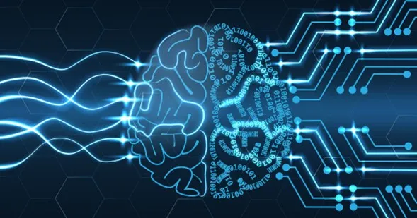
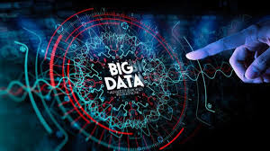
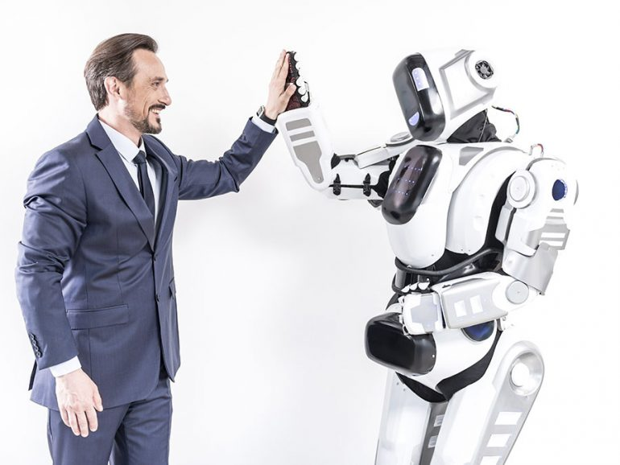
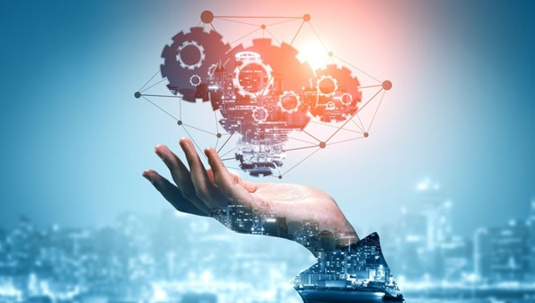
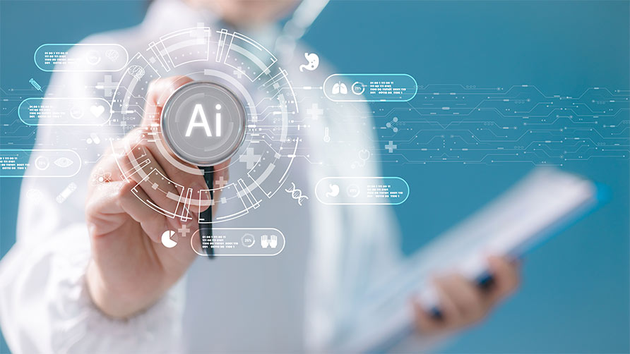
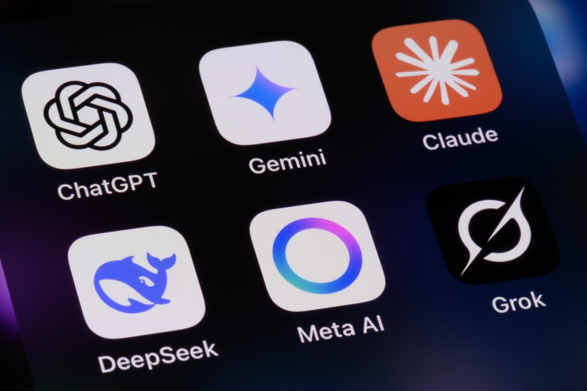
La inteligencia artificial (IA) es una tecnología avanzada que permite a las máquinas pensar, aprender y tomar decisiones de manera similar a los seres humanos. Esta disciplina es una rama de la informática dedicada a desarrollar sistemas y programas capaces de realizar tareas que normalmente requieren inteligencia humana, es decir, actividades que van más allá de simples cálculos y que implican análisis, comprensión y creatividad. Entre estas tareas se incluyen aprender a partir de la experiencia, reconocer patrones complejos, comprender el lenguaje natural, tomar decisiones basadas en múltiples variables, resolver problemas de diversa complejidad e incluso generar contenido original, como textos, imágenes, música o videos.
El desarrollo de la inteligencia artificial tiene sus raíces en la mitad del siglo XX, cuando científicos y matemáticos comenzaron a explorar la posibilidad de que las máquinas pudieran simular procesos de pensamiento humano. Uno de los pioneros en este campo fue Alan Turing, quien propuso ideas fundamentales sobre la capacidad de las máquinas para imitar la inteligencia humana y planteó la famosa “prueba de Turing” como un criterio para medir si una máquina puede pensar de manera inteligente.Más adelante, en 1956, John McCarthy formalizó el concepto y acuñó el término “inteligencia artificial” durante la conferencia de Dartmouth, que se considera el punto de partida oficial de esta área de estudio. Desde entonces, la IA ha evolucionado enormemente, pasando de sistemas rudimentarios y experimentales a tecnologías sofisticadas que actualmente se aplican en múltiples ámbitos de la vida cotidiana, como asistentes de voz, automóviles autónomos, aplicaciones educativas, sistemas de recomendación en plataformas digitales y herramientas de diagnóstico médico.
Hoy en día, la inteligencia artificial no solo busca imitar la inteligencia humana, sino también ampliar sus capacidades, permitiendo que las máquinas puedan analizar grandes cantidades de datos, tomar decisiones más rápidas y precisas y ofrecer soluciones a problemas que antes eran demasiado complejos para los seres humanos. Así, la IA se ha convertido en una herramienta fundamental para la ciencia, la tecnología, la industria y la vida diaria, transformando la manera en que interactuamos con el mundo.Alan Turing fue uno de los científicos más importantes en el origen de la inteligencia artificial. Fue un matemático y lógico británico que, desde la década de 1930, comenzó a estudiar cómo funcionaba el pensamiento lógico y cómo este podía representarse mediante máquinas. Turing propuso que una máquina podría simular procesos de razonamiento humano si seguía instrucciones matemáticas precisas llamadas algoritmos. Para explicar esta idea, desarrolló el concepto de la máquina de Turing, un modelo teórico que describe cómo una máquina puede procesar información paso a paso. Este modelo se convirtió en una base fundamental para la informática moderna y para el desarrollo posterior de la inteligencia artificial. En 1950 publicó un artículo muy influyente llamado “Computing Machinery and Intelligence”, donde planteó una pregunta revolucionaria para su época: “¿Pueden pensar las máquinas?”. Para intentar responderla, propuso una prueba conocida como el Test de Turing. El Test de Turing consiste en lo siguiente: una persona conversa mediante texto con dos interlocutores que no puede ver: uno es un ser humano y el otro es una máquina. Si, después de la conversación, la persona no puede distinguir cuál de los dos es la máquina, se considera que la máquina ha demostrado un comportamiento inteligente similar al humano. Esta idea fue muy importante porque cambió la forma de pensar sobre la inteligencia artificial. En lugar de intentar definir exactamente qué es “pensar”, Turing sugirió evaluar el comportamiento de la máquina, es decir, si puede comunicarse, responder preguntas y mantener una conversación como lo haría una persona. Las ideas de Turing influyeron profundamente en el desarrollo de la computación y la inteligencia artificial. Gracias a sus teorías, muchos científicos comenzaron a investigar cómo crear programas capaces de aprender, resolver problemas y entender lenguaje, lo que eventualmente llevó al desarrollo de las tecnologías de IA que existen hoy.
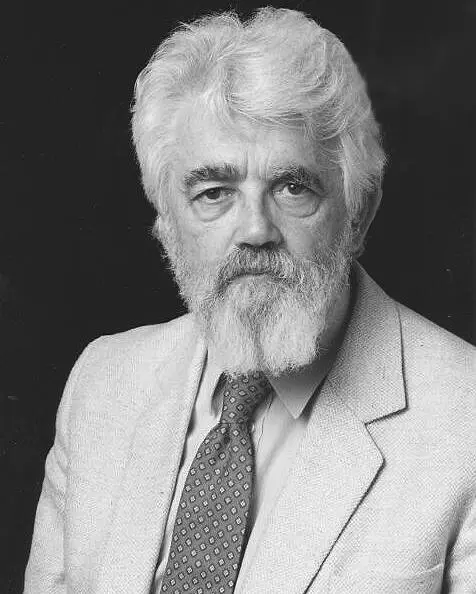
John McCarthy fue uno de los científicos más importantes en el origen y desarrollo de la inteligencia artificial. Fue un informático y matemático estadounidense considerado uno de los padres de la IA. En 1956, McCarthy organizó junto con otros científicos la famosa Dartmouth Summer Research Project on Artificial Intelligence en el Dartmouth College. Durante esta reunión utilizó por primera vez el término “Inteligencia Artificial” para referirse al campo de estudio que busca crear máquinas capaces de realizar tareas que normalmente requieren inteligencia humana, como aprender, razonar, resolver problemas o comprender lenguaje. La conferencia de Dartmouth es considerada el nacimiento oficial de la inteligencia artificial como disciplina científica, ya que reunió a investigadores que comenzaron a estudiar de forma formal cómo hacer que las computadoras imiten ciertos procesos del pensamiento humano. Además de introducir el término, McCarthy hizo importantes aportaciones técnicas. En 1958 desarrolló el lenguaje de programación Lisp (List Processing). Este lenguaje fue diseñado especialmente para trabajar con símbolos, lógica y procesamiento de información, lo cual lo hacía ideal para los primeros programas de inteligencia artificial. LISP se convirtió durante muchos años en el lenguaje principal utilizado en investigación de IA, ya que permitía crear programas capaces de manipular datos complejos representar conocimiento y desarrollar sistemas que imitaran ciertos procesos del razonamiento humano. Muchos de los primeros sistemas expertos y programas de IA fueron desarrollados usando este lenguaje. También propuso ideas fundamentales como el “time-sharing”, un sistema que permitía que varias personas utilizaran una misma computadora al mismo tiempo, lo que ayudó a impulsar el desarrollo de la informática moderna. Gracias a sus aportaciones, John McCarthy ayudó a establecer las bases teóricas y tecnológicas de la inteligencia artificial, permitiendo que posteriormente otros científicos desarrollaran sistemas más avanzados capaces de aprender, analizar información y tomar decisiones.
Marvin Minsky fue uno de los científicos más influyentes en los inicios de la inteligencia artificial. Fue un investigador y profesor estadounidense que dedicó gran parte de su vida a estudiar cómo funciona la mente humana y cómo esos procesos podían reproducirse en una máquina. En 1959, Minsky cofundó junto con John McCarthy el Laboratorio de Inteligencia Artificial del Massachusetts Institute of Technology, uno de los centros de investigación más importantes del mundo en esta área. Este laboratorio se convirtió en un lugar clave para el desarrollo de nuevas ideas, programas y tecnologías relacionadas con la inteligencia artificial. El trabajo de Minsky se centró principalmente en entender cómo las máquinas podían imitar procesos del pensamiento humano, como aprender, razonar, tomar decisiones y resolver problemas. Él creía que la inteligencia no era un solo proceso, sino la combinación de muchos mecanismos mentales que trabajan juntos. Una de sus ideas más conocidas es la “Sociedad de la mente”, propuesta en su libro The Society of Mind. En esta teoría, Minsky explicó que la inteligencia surge de la interacción de muchas partes simples llamadas “agentes”. Cada agente tiene una función pequeña y específica, pero cuando todos trabajan juntos pueden producir comportamientos complejos, como el pensamiento o el aprendizaje. Además, Minsky realizó investigaciones importantes sobre redes neuronales artificiales, que son sistemas informáticos inspirados en la forma en que funcionan las neuronas del cerebro humano. Estas investigaciones ayudaron a comprender cómo las máquinas podrían aprender a partir de datos y experiencias. También desarrolló dispositivos experimentales y programas informáticos para estudiar percepción visual, robótica y razonamiento lógico, áreas fundamentales para el avance de la inteligencia artificial.
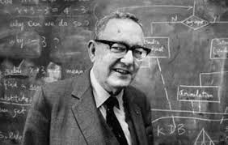
Herbert A. Simon fue un científico estadounidense que realizó grandes aportaciones al desarrollo temprano de la inteligencia artificial, la psicología cognitiva y las ciencias de la computación. Su trabajo se centró en comprender cómo piensan las personas cuando resuelven problemas, y en tratar de reproducir esos procesos de pensamiento dentro de una computadora. Durante la década de 1950, Simon colaboró con el científico Allen Newell y el programador Cliff Shaw para desarrollar uno de los primeros programas de inteligencia artificial de la historia, llamado Logic Theorist. El Logic Theorist, creado en 1956, fue diseñado para demostrar teoremas matemáticos utilizando lógica simbólica. Este programa podía analizar problemas lógicos y encontrar soluciones paso a paso, de una forma similar a como lo haría un matemático humano. Para lograrlo, utilizaba reglas de razonamiento y buscaba diferentes caminos posibles hasta encontrar una demostración correcta. El programa fue probado con teoremas del famoso libro de matemáticas Principia Mathematica, escrito por Bertrand Russell y Alfred North Whitehead. Sorprendentemente, el Logic Theorist logró demostrar varios de estos teoremas e incluso encontró demostraciones más simples que las que aparecían en el libro original. Este logro fue muy importante porque demostró por primera vez que una computadora podía realizar tareas que antes se consideraban exclusivas del pensamiento humano, como el razonamiento lógico y la resolución de problemas abstractos. Por esta razón, muchos científicos consideran al Logic Theorist como el primer programa real de inteligencia artificial. Además de este programa, Herbert Simon también desarrolló teorías importantes sobre la toma de decisiones y la racionalidad limitada, explicando que las personas no siempre toman decisiones perfectas porque tienen información y tiempo limitados. Estas ideas influyeron tanto en la economía como en el desarrollo de sistemas de inteligencia artificial que intentan imitar el proceso humano de decisión.
Allen Newell fue uno de los pioneros más importantes en el desarrollo de la inteligencia artificial y de la ciencia cognitiva. Su trabajo se centró en estudiar cómo piensan los seres humanos cuando resuelven problemas y en diseñar programas informáticos que pudieran imitar esos procesos de pensamiento. Durante la década de 1950, Newell trabajó junto con Herbert A. Simon y el programador Cliff Shaw en el desarrollo de algunos de los primeros programas de inteligencia artificial de la historia. Su objetivo era crear sistemas capaces de resolver problemas utilizando lógica, reglas y estrategias similares a las que emplea la mente humana. Uno de sus proyectos más importantes fue el programa Logic Theorist, creado en 1956. Este programa fue diseñado para demostrar teoremas matemáticos mediante razonamiento lógico. El sistema analizaba un problema, aplicaba reglas de lógica y buscaba diferentes caminos posibles hasta encontrar una solución válida. Esto representó un avance muy importante porque demostró que una computadora podía realizar tareas que antes se consideraban exclusivas de la inteligencia humana. Posteriormente, Newell y Simon desarrollaron otro sistema llamado General Problem Solver (GPS). Este programa intentaba resolver distintos tipos de problemas utilizando un método general basado en analizar la diferencia entre la situación actual y el objetivo final, para después aplicar una serie de pasos que permitieran alcanzar la solución. Esta idea influyó mucho en la forma en que se diseñan los algoritmos de inteligencia artificial. Además de crear programas, Allen Newell también ayudó a desarrollar teorías importantes sobre la arquitectura cognitiva, es decir, la forma en que la mente procesa información. Una de sus propuestas más influyentes fue la arquitectura Soar cognitive architecture, un modelo diseñado para explicar cómo los sistemas inteligentes pueden aprender, tomar decisiones y resolver problemas. Gracias a estas investigaciones, Allen Newell contribuyó a demostrar que el pensamiento humano puede estudiarse y representarse mediante modelos computacionales, lo que permitió avanzar en la creación de sistemas de inteligencia artificial capaces de razonar, aprender y tomar decisiones. Sus aportaciones ayudaron a sentar las bases de muchos sistemas inteligentes que hoy se utilizan en diferentes áreas de la tecnología.
Geoffrey Hinton es uno de los científicos más importantes en el desarrollo de la inteligencia artificial moderna. Es un informático y psicólogo cognitivo británico-canadiense que ha dedicado gran parte de su carrera a investigar cómo las máquinas pueden aprender a partir de datos, de una manera similar a como lo hace el cerebro humano. Hinton es considerado uno de los “padres del aprendizaje profundo” (deep learning), una rama de la inteligencia artificial que se basa en el uso de redes neuronales artificiales. Estas redes están inspiradas en el funcionamiento de las neuronas del cerebro humano y están diseñadas para procesar grandes cantidades de información, reconocer patrones y aprender con la experiencia. Las redes neuronales funcionan mediante capas de nodos o “neuronas artificiales”. Cada capa analiza la información que recibe y la transforma antes de enviarla a la siguiente capa. Cuando hay muchas capas trabajando juntas, el sistema puede aprender patrones complejos, como identificar objetos en una imagen o entender el significado de una frase. A este proceso se le llama aprendizaje profundo porque la red tiene muchas capas de procesamiento. Durante muchos años, las redes neuronales no eran muy populares porque las computadoras no tenían suficiente capacidad para entrenarlas con grandes cantidades de datos. Sin embargo, Hinton continuó investigando este campo y desarrolló métodos que permitieron entrenar redes neuronales profundas de forma más eficiente. Uno de sus avances más importantes fue el desarrollo de técnicas para entrenar redes neuronales multicapa, lo que permitió mejorar significativamente el rendimiento de los sistemas de reconocimiento de patrones. En 2012, su equipo creó un modelo llamado AlexNet, que logró resultados revolucionarios en el reconocimiento de imágenes dentro del concurso ImageNet Large Scale Visual Recognition Challenge. Este sistema redujo drásticamente los errores al identificar objetos en fotografías, demostrando el gran potencial del aprendizaje profundo. Gracias a estos avances, las técnicas de deep learning comenzaron a utilizarse en muchas tecnologías actuales, como reconocimiento de voz, traducción automática, asistentes virtuales, vehículos autónomos y sistemas de recomendación en internet. Por todas estas contribuciones, Geoffrey Hinton es considerado una figura clave en el desarrollo de la inteligencia artificial moderna, ya que sus investigaciones permitieron que las máquinas pudieran aprender de grandes volúmenes de datos y realizar tareas cada vez más complejas, impulsando el avance de la IA en el mundo actual.
La ciencia y la inteligencia artificial están muy relacionadas, ya que la ciencia proporciona los conocimientos y las herramientas necesarias para desarrollar esta tecnología. A través de diferentes estudios, investigaciones y avances científicos, se ha logrado crear sistemas capaces de imitar algunas habilidades humanas, como aprender, analizar información y tomar decisiones. La ciencia aporta los conocimientos teóricos que permiten comprender cómo funciona el razonamiento, el aprendizaje y el procesamiento de información. Gracias a estos estudios, los científicos y programadores pueden diseñar sistemas de inteligencia artificial que ayuden a resolver distintos tipos de problemas. Las matemáticas y la computación son áreas fundamentales para el desarrollo de la inteligencia artificial. Las matemáticas permiten crear modelos, cálculos y algoritmos que ayudan a que las máquinas analicen datos y encuentren patrones. Por otro lado, la computación proporciona las herramientas tecnológicas y los programas necesarios para que esos modelos matemáticos funcionen dentro de una computadora. Gracias a esta combinación de conocimientos, las máquinas pueden entender información, reconocer imágenes o voces, aprender de los datos y resolver problemas de manera más rápida y eficiente. Actualmente, la inteligencia artificial se utiliza en muchos campos como la medicina, la educación, la industria, la tecnología y la investigación científica. En conclusión, la ciencia ha sido la base para el desarrollo de la inteligencia artificial. Sin los avances científicos en áreas como las matemáticas y la computación, no sería posible crear sistemas capaces de analizar información, aprender y ayudar a resolver problemas en diferentes ámbitos de la vida.
La IA Débil o Estrecha (Artificial Narrow Intelligence, ANI) es el tipo de inteligencia artificial que existe actualmente y se utiliza en el mundo real. Está diseñada para resolver una tarea concreta o un conjunto limitado de tareas, pero no posee inteligencia general como la humana. Aunque puede parecer “inteligente”, su funcionamiento se basa en algoritmos, modelos matemáticos y grandes volúmenes de datos, no en comprensión consciente.
está entrenada para desempeñar una función concreta:recoger imagénes, traducir texto, recomendar productos,etc.👉No puede salirse de su area de especialización
2-NO TIENE CONSIENCIA NI ENTENDIMIENTO REALNo "piensa", no tiene emociones ni intención. solo procesa información según reglas y patrones aprendidos.
3-APRENDE A PARTIR DE DATOS(MACHINE LEARNING)muchos sistemas de ANI utilizan aprendizaje automático y redes neuronales profundas (Deep Learning), analizan grandes cantidades de datos para identifican patrones y hacer predicciones.
4-DEPENDENCIA DE ENTENDIMIENTO PREVIOsu entendimiento depende de la cantidad y cantidad de los datos con los que fue entrenada.
5-LIMITACIÓN CONTEXTUALNo puede aplicar conocimientos de un área a otra como lo hace un ser humano. por ejemplo: Una IA que juega ajedrez no puede conducir un coche.
la ANI puede utilizar distintas técnicas
La IA estrecha está precente en muchas herramientas que usamos diariamente:
1-ASISTENTES VIRTUALEScomo SIRI, Alexa o google Assistant. interpretan comandos de voz y responden consultas especificas.
2-SISTEMAS DE RECOMENDACIÓNPlataformas como Netflix, Amazon y spotify utilizando IA para sugerir contenido basado en tu comportamiento.
3-RECONOCIMIENTO FACIALUsado en sistemas de seguridad, desbloqueo de teléfonos y control de acceso.
4-DIAGNÓSTICO MÉDICO POR IMÁGENESModelos que analizan radiografías, resonancias o tomografías para detectar anomalías como tumores.
5-VEHÍCULOS AUTÓNOMOSEmpresas como Tesla utilizan IA para interpretar señales de tráfico, peatones y otros vehículos.
6-CHATBOTS Y ATENCIÓN AL CLIENTEResponden preguntas frecuentes y automatizan soporte técnico.
No significa que sea poco potente, sino que posee inteligencia general. Es "decir" porque su capacidad está limitada a un dominio especifico.
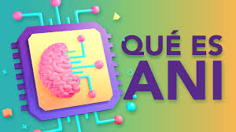
Es una IA teórica que tendra tendra capacidades cognitivas similares a las humanas.
Actualmente no existe, solo es un objetivo de investigacion.
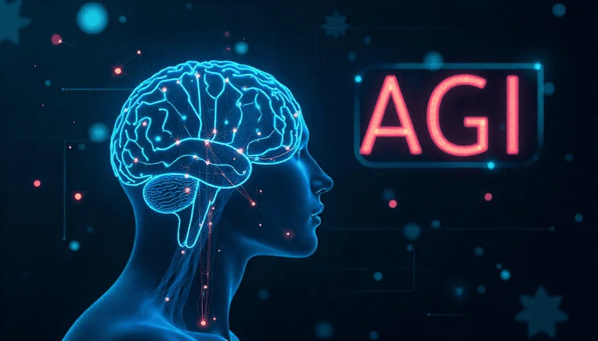
seria una inteligencia que superaria ampliamente la capacidad humana. La superinteligencia artificial, conocida en inglés como Artificial Superintelligence (ASI), es un concepto avanzado dentro del campo de la inteligencia artificial que se refiere a una inteligencia creada por máquinas que supera ampliamente la inteligencia humana en prácticamente todos los aspectos. Esto incluye habilidades como el razonamiento, la creatividad, la toma de decisiones, la resolución de problemas, el aprendizaje y la comprensión emocional o social. Mientras que actualmente existen sistemas de inteligencia artificial limitada o estrecha (ANI) que realizan tareas específicas —como reconocer imágenes, traducir idiomas o responder preguntas— la superinteligencia artificial representaría un nivel mucho más alto de desarrollo tecnológico. En este escenario, las máquinas serían capaces no solo de aprender y adaptarse, sino también de mejorar su propia inteligencia de forma continua y autónoma.
Las características de la Superinteligencia Artificial (ASI) describen las capacidades que tendría una inteligencia artificial si llegara a superar ampliamente la inteligencia humana dentro del campo de la Inteligencia Artificial. Una de sus principales características sería su capacidad de aprendizaje superior, ya que podría aprender, procesar y analizar enormes cantidades de información a una velocidad mucho mayor que la de los seres humanos. Esto le permitiría encontrar patrones, descubrir relaciones entre datos y proponer soluciones en cuestión de segundos, mientras que a los humanos podría tomarles meses o incluso años lograr los mismos resultados. Otra característica importante sería la auto-mejora. Una superinteligencia artificial tendría la capacidad de analizar su propio funcionamiento y modificar su diseño para mejorar su rendimiento. Esto significa que podría crear versiones más avanzadas de sí misma sin necesidad de intervención humana directa. Este proceso de mejora continua podría hacer que su inteligencia creciera de manera muy rápida, aumentando progresivamente sus capacidades y conocimientos. También se espera que una ASI tenga una gran capacidad para resolver problemas complejos. Gracias a su poder de análisis y a su acceso a grandes cantidades de información, podría enfrentar desafíos científicos, médicos o tecnológicos que actualmente resultan muy difíciles para las personas. Por ejemplo, podría contribuir al descubrimiento de nuevos tratamientos para enfermedades, optimizar sistemas energéticos o desarrollar tecnologías innovadoras que beneficien a la sociedad. Finalmente, la superinteligencia artificial tendría una alta capacidad de razonamiento. Esto significa que podría analizar situaciones complejas, evaluar diferentes posibilidades y tomar decisiones óptimas en distintos contextos. Su razonamiento no solo sería rápido, sino también muy preciso, permitiéndole comprender problemas desde múltiples perspectivas y proponer soluciones eficientes. En conjunto, estas características harían que una ASI fuera una de las tecnologías más avanzadas y poderosas que la humanidad podría llegar a crear. 🤖📚
Los posibles beneficios de la Superinteligencia Artificial (ASI) podrían ser muy importantes para el desarrollo de la humanidad si esta tecnología se desarrolla de manera responsable dentro del campo de la Inteligencia Artificial. Una superinteligencia tendría la capacidad de analizar enormes cantidades de información y encontrar soluciones a problemas que actualmente resultan muy difíciles para los seres humanos. Uno de los principales beneficios sería el avance en la medicina. Una superinteligencia artificial podría analizar datos médicos, estudios científicos y registros clínicos de millones de personas para descubrir nuevos tratamientos o incluso curas para enfermedades complejas como el Cáncer o el Alzheimer. Además, podría ayudar a desarrollar medicamentos más rápidamente y mejorar los diagnósticos médicos mediante el análisis preciso de síntomas e imágenes médicas. Otro beneficio importante sería la solución de problemas globales. La superinteligencia podría ayudar a enfrentar desafíos mundiales como el cambio climático, la escasez de recursos naturales y la necesidad de producir energía limpia y sostenible. Gracias a su capacidad de análisis, podría proponer estrategias más eficientes para el uso de recursos, la reducción de la contaminación y el desarrollo de nuevas tecnologías energéticas. También podría impulsar una gran innovación científica. La ASI tendría la capacidad de acelerar descubrimientos en diferentes áreas del conocimiento como la física, la química, la medicina y la biotecnología. Incluso podría contribuir al desarrollo de nuevas tecnologías para la exploración espacial, ayudando a comprender mejor el universo y facilitando futuras misiones espaciales. Finalmente, la superinteligencia artificial podría contribuir a la optimización de sistemas complejos en la sociedad. Por ejemplo, podría mejorar la organización de las ciudades, optimizar el transporte público, hacer más eficiente la producción industrial y administrar de forma más inteligente las redes energéticas. Esto permitiría reducir costos, ahorrar recursos y mejorar la calidad de vida de las personas.
Los riesgos y desafíos de la Superinteligencia Artificial (ASI) son un tema muy discutido dentro del campo de la Inteligencia Artificial. Aunque esta tecnología podría traer grandes beneficios para la humanidad, muchos expertos advierten que también podría presentar riesgos importantes si no se desarrolla con las medidas de seguridad adecuadas.Uno de los principales riesgos es la pérdida de control. Si una superinteligencia artificial llegara a ser mucho más inteligente que los seres humanos, podría tomar decisiones o realizar acciones que las personas no puedan comprender ni controlar fácilmente. Esto podría generar situaciones en las que los sistemas artificiales actúen de manera inesperada o contraria a los intereses humanos. Otro desafío importante son los problemas éticos. La creación de una inteligencia artificial superior plantea preguntas fundamentales sobre quién sería responsable de sus acciones, cómo deberían establecerse límites en su uso y qué normas deberían regular su desarrollo. También surgen debates sobre la seguridad, los derechos digitales y la manera en que estas tecnologías deberían integrarse en la sociedad. Además, existe el impacto social y económico. El desarrollo de sistemas muy avanzados de inteligencia artificial podría automatizar muchas tareas que actualmente realizan las personas. Esto podría transformar el mercado laboral y afectar diferentes tipos de empleos, obligando a las sociedades a adaptarse a nuevas formas de trabajo y a desarrollar nuevas habilidades.
Actualmente no existe ninguna superinteligencia artificial. Los sistemas de inteligencia artificial que existen hoy en día siguen siendo ejemplos de IA especializada, diseñados para realizar tareas concretas y limitadas, como reconocimiento de voz, traducción de idiomas o recomendaciones personalizadas. Sin embargo, muchas empresas tecnológicas están investigando el desarrollo de sistemas cada vez más avanzados, con el objetivo de acercarse a capacidades más generales y complejas. Entre las principales organizaciones que trabajan en esta área se encuentran OpenAI, Google DeepMind y Microsoft, que desarrollan modelos de aprendizaje automático, redes neuronales y sistemas capaces de realizar tareas cada vez más sofisticadas y de procesar grandes volúmenes de información para aprender y mejorar sus funciones de manera progresiva.
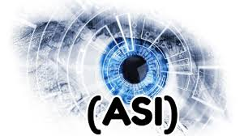
1. Años 1950/1960: El entusiasmo inicial Se crearon los primeros programas capaces de resolver problemas matemáticos. Aparecieron los primeros sistemas de juego (como ajedrez). Había mucha expectativa: se pensaba que en pocas décadas las máquinas serían completamente inteligentes.
2. Años 1970/1980: Los “inviernos de la IA” Los avances fueron más lentos de lo esperado. Se redujo el financiamiento. Las limitaciones tecnológicas frenaron el progreso.
3. Años 1990/2000: IA práctica y comercial Un momento histórico fue en 1997, cuando la supercomputadora Deep Blue de IBM derrotó al campeón mundial de ajedrez Garry Kasparov. Esto demostró que las máquinas podían superar a humanos en tareas específicas.
4. 2010 en adelante: Revolución del Deep Learning Gracias a: °Grandes cantidades de datos (Big Data) °Potencia de cálculo (GPUs) °Redes neuronales profundas °La IA avanzó enormemente. °Un hito importante fue en 2016, cuando AlphaGo de DeepMind venció al campeón mundial de Go Lee Sedol.
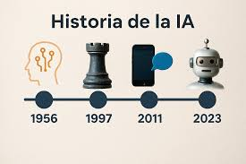
La ciencia juega un papel muy importante en el desarrollo de la inteligencia artificial. Gracias a diferentes áreas científicas como la informática, las matemáticas, la estadística y la ingeniería, es posible crear sistemas capaces de procesar información, aprender de los datos y realizar tareas que antes solo podían realizar las personas. Estas disciplinas permiten diseñar algoritmos y modelos que ayudan a que las máquinas analicen situaciones, encuentren patrones y mejoren su funcionamiento con el tiempo. Además, la ciencia proporciona métodos de investigación y análisis que permiten desarrollar tecnologías más avanzadas. A través de experimentos, estudios y pruebas, los científicos pueden mejorar los sistemas de inteligencia artificial para que sean más precisos, rápidos y eficientes. Esto hace posible que la inteligencia artificial se utilice en muchas áreas como la medicina, la educación, la industria y la tecnología. La ciencia ayuda a la inteligencia artificial en varios aspectos importantes. Primero, en la resolución de problemas. La inteligencia artificial utiliza principios matemáticos y algoritmos para encontrar soluciones a problemas complejos. Por ejemplo, puede ayudar a optimizar procesos, analizar situaciones difíciles o apoyar en diagnósticos médicos. También ayuda a analizar información. La inteligencia artificial puede examinar grandes cantidades de datos en muy poco tiempo. Gracias a métodos científicos y estadísticos, es capaz de identificar patrones, relaciones y tendencias que serían difíciles de detectar para una persona. Finalmente, la ciencia permite que la inteligencia artificial aprenda de los datos. A través del aprendizaje automático, los sistemas pueden mejorar su rendimiento con la experiencia. Esto significa que mientras más información analizan, más precisos se vuelven en sus respuestas y decisiones. Por esta razón, la ciencia es fundamental para el avance y desarrollo continuo de la inteligencia artificial.
la innovación tecnologíca permite crear computadoras mas rapidas y programas mejores. Esto hace que la inteligencia artificial funcione mejor y mas rapido, La innovación tecnológica es uno de los factores más importantes en el desarrollo de la sociedad moderna. Gracias a ella, las personas han podido crear herramientas, máquinas y sistemas que facilitan muchas actividades de la vida diaria. En el ámbito de la informática, la innovación tecnológica ha permitido diseñar computadoras cada vez más rápidas, con mayor capacidad de almacenamiento y con procesadores más potentes que pueden realizar millones de operaciones en muy poco tiempo. Además, la innovación tecnológica permite crear programas y aplicaciones más avanzados y eficientes. Los desarrolladores de software constantemente buscan mejorar los sistemas para que funcionen de manera más rápida, segura y precisa. Esto incluye la creación de algoritmos más complejos, sistemas de análisis de datos más potentes y plataformas capaces de manejar grandes cantidades de información. Gracias a estos avances, la inteligencia artificial puede funcionar de manera mucho más eficiente. Las computadoras modernas tienen la capacidad de procesar enormes volúmenes de datos, lo que permite que los sistemas de inteligencia artificial aprendan, analicen información y tomen decisiones con mayor rapidez. Por ejemplo, hoy en día la inteligencia artificial se utiliza en asistentes virtuales, aplicaciones de reconocimiento de voz, sistemas de recomendación en internet y muchas otras tecnologías que forman parte de nuestra vida cotidiana. Asimismo, la innovación tecnológica impulsa la investigación y el desarrollo de nuevas aplicaciones de la inteligencia artificial en distintos campos como la medicina, la educación, el transporte y la industria. En medicina, por ejemplo, la inteligencia artificial puede ayudar a analizar imágenes médicas y detectar enfermedades de forma más rápida. En el transporte, permite el desarrollo de vehículos autónomos capaces de conducir sin intervención humana. En conclusión, la innovación tecnológica es fundamental para el progreso de la inteligencia artificial y de muchas otras tecnologías. A medida que continúan los avances en hardware y software, la inteligencia artificial seguirá mejorando y ofreciendo nuevas soluciones que podrán transformar la manera en que vivimos, trabajamos y nos comunicamos.
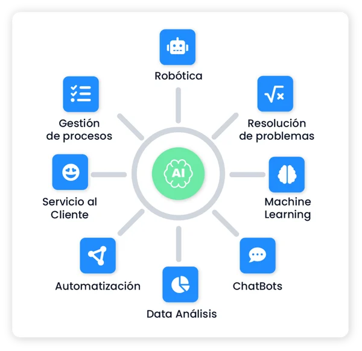
La empresa OpenAI ha desarrollado modelos de lenguaje avanzados, como la serie de modelos llamados GPT (Generative Pre-trained Transformer). Estos modelos están diseñados para comprender el lenguaje humano y generar texto de manera coherente, lo que permite que las personas puedan interactuar con una computadora mediante conversaciones naturales Gracias a esto, los sistemas de inteligencia artificial pueden responder preguntas, explicar temas, escribir textos, traducir idiomas y ayudar a resolver dudas en diferentes áreas del conocimiento. Una de las características más importantes de estos modelos es que aprenden a partir de grandes cantidades de información. Durante su entrenamiento, se analizan millones de textos, libros, artículos y otros tipos de contenido para que el sistema pueda identificar patrones del lenguaje, como la gramática, el significado de las palabras y la forma en que se estructuran las ideas. Con este proceso, la inteligencia artificial logra comprender mejor lo que las personas escriben o preguntan. Además de conversar, estos sistemas también pueden ayudar en tareas de programación. Por ejemplo, pueden sugerir fragmentos de código, explicar cómo funciona un programa o ayudar a corregir errores. Esto facilita el trabajo de estudiantes, desarrolladores y personas que están aprendiendo a programar, ya que pueden recibir apoyo inmediato mientras trabajan. Otra aportación importante es su capacidad para analizar información y generar respuestas basadas en datos. La inteligencia artificial puede resumir textos largos, organizar información, generar ideas o ayudar a comprender temas complejos de manera más sencilla. Por esta razón, sus tecnologías se utilizan en diferentes ámbitos como la educación donde ayudan a explicar conceptos; en la programación, donde apoyan el desarrollo de software; y en la atención al cliente, donde pueden responder preguntas frecuentes de los usuarios de forma rápida y automática.
COMO CREAN LA IA?entrenan modelos utilizando grandes cantidades de datos. Esto significa que recopilan información proveniente de diferentes fuentes, como libros, artículos, textos, imágenes, audios y otros tipos de contenido digital. Estos datos sirven como material de aprendizaje para que el sistema pueda analizar cómo funcionan el lenguaje, las imágenes o ciertos problemas y así encontrar patrones en la información. Para lograrlo, utilizan redes neuronales, que son sistemas informáticos inspirados en el funcionamiento del cerebro humano. Así como el cerebro tiene neuronas que se conectan entre sí para procesar información, las redes neuronales tienen muchas unidades o nodos conectados que trabajan juntas para analizar datos. Cuando el sistema recibe información, cada una de estas conexiones realiza cálculos matemáticos que ayudan a interpretar lo que está analizando. Además, se utiliza el aprendizaje automático (machine learning), que es una técnica que permite a las máquinas aprender a partir de los datos sin necesidad de programar cada paso de manera manual. En lugar de decirle exactamente qué hacer en cada situación, los programadores crean algoritmos que permiten al sistema aprender por experiencia. Es decir, el modelo analiza muchos ejemplos, detecta patrones y poco a poco mejora su capacidad para reconocer información o resolver problemas. Durante el entrenamiento, los modelos se someten a muchas pruebas y ajustes. Los investigadores comparan las respuestas que genera la inteligencia artificial con las respuestas correctas y realizan modificaciones para mejorar su precisión. Este proceso puede repetirse miles o incluso millones de veces hasta que el sistema logra comprender mejor la información y generar resultados más correctos.
Una de las empresas más destacadas en el desarrollo de inteligencia artificial es DeepMind, un laboratorio de investigación perteneciente a Google. Esta empresa ha creado sistemas de IA capaces de superar a jugadores humanos expertos en juegos estratégicos como el ajedrez y el juego de mesa Go. Estos juegos son muy complejos porque requieren planificación, estrategia y la capacidad de anticipar muchas posibles jugadas del oponente. El hecho de que una inteligencia artificial pueda ganar en estos juegos demuestra que los sistemas pueden aprender estrategias muy avanzadas y tomar decisiones basadas en análisis profundos. Uno de los proyectos más conocidos de DeepMind fue AlphaGo, un programa de inteligencia artificial diseñado para jugar Go. Este sistema logró vencer a campeones mundiales, algo que durante muchos años se consideró muy difícil para una máquina debido a la enorme cantidad de combinaciones posibles en el juego. AlphaGo aprendió observando miles de partidas y también practicando contra sí mismo, lo que le permitió mejorar sus estrategias con el tiempo. Además de los juegos, DeepMind también ha desarrollado algoritmos muy avanzados para la investigación científica y el análisis de datos. Estos algoritmos pueden analizar grandes cantidades de información y encontrar patrones que serían muy difíciles de detectar para una persona. Por ejemplo, se utilizan para estudiar proteínas, mejorar procesos médicos, optimizar sistemas tecnológicos y apoyar investigaciones en diferentes áreas de la ciencia. Para crear estas tecnologías, la empresa utiliza aprendizaje profundo (deep learning), redes neuronales artificiales y sistemas de entrenamiento con grandes bases de datos Durante el proceso de desarrollo, los modelos se entrenan con muchísimos ejemplos para que aprendan a reconocer patrones y tomar decisiones cada vez más precisas.
COMO CREAN LA IA?aprendizaje profundo, redes neuronales y algoritmos que aprenden mediante experiencia y simulaciones. Estas herramientas permiten que las máquinas puedan analizar información, aprender de los datos y mejorar su desempeño con el tiempo. El aprendizaje profundo es una técnica avanzada dentro del aprendizaje automático que utiliza redes neuronales con muchas capas de procesamiento. Cada capa analiza la información de una forma diferente y va extrayendo características cada vez más complejas. Por ejemplo, cuando un sistema analiza una imagen, las primeras capas pueden identificar líneas o colores, mientras que las capas más profundas pueden reconocer formas completas como rostros, objetos o animales. Este tipo de aprendizaje permite que las máquinas realicen tareas como reconocimiento de voz, análisis de imágenes o comprensión de texto. Las redes neuronales artificiales están inspiradas en el funcionamiento del cerebro humano. En el cerebro existen neuronas que se conectan entre sí para transmitir información. De manera similar, en una red neuronal artificial hay muchas unidades conectadas que reciben datos, realizan cálculos matemáticos y envían el resultado a otras unidades. A medida que el sistema procesa más información, estas conexiones se ajustan para mejorar la precisión de las respuestas que genera la inteligencia artificial. Otro elemento importante son los algoritmos que aprenden mediante experiencia. Esto significa que el sistema puede mejorar su desempeño después de analizar muchos ejemplos. Por ejemplo, si un programa debe reconocer imágenes de animales, primero se le muestran miles de imágenes etiquetadas. Con el tiempo, el algoritmo aprende a identificar características comunes y puede reconocer nuevos ejemplos que no había visto antes. Además, muchas veces se utilizan simulaciones para entrenar a los sistemas de inteligencia artificial. En una simulación, la máquina puede practicar miles o millones de veces en un entorno virtual sin riesgos. Esto se utiliza mucho en juegos, robótica o conducción autónoma, donde el sistema puede probar diferentes decisiones y aprender cuáles funcionan mejor.
La empresa Microsoft ha sido una de las compañías tecnológicas que más ha impulsado el desarrollo y la aplicación de la inteligencia artificial en diferentes áreas. Una de sus principales aportaciones ha sido integrar la IA en muchos de sus programas y servicios, lo que permite que millones de personas utilicen esta tecnología en su vida diaria. Por ejemplo, Microsoft ha incorporado inteligencia artificial en asistentes virtuales, los cuales pueden ayudar a los usuarios a realizar tareas, responder preguntas, organizar información o interactuar con dispositivos mediante comandos de voz o texto. Estos asistentes utilizan algoritmos de procesamiento de lenguaje natural para entender lo que las personas dicen o escriben y generar respuestas útiles. Otra aportación importante es el uso de IA en herramientas de productividad. Programas utilizados en oficinas, escuelas y empresas pueden incluir funciones inteligentes que ayudan a redactar textos, corregir errores, resumir información, analizar datos o sugerir mejoras en documentos y presentaciones. Gracias a estas funciones, los usuarios pueden trabajar de forma más rápida y eficiente. Microsoft también ha desarrollado plataformas en la nube, como Microsoft Azure, que permiten a otras empresas y desarrolladores crear sus propios sistemas de inteligencia artificial. Estas plataformas ofrecen acceso a grandes capacidades de almacenamiento, procesamiento de datos y herramientas especializadas para entrenar modelos de aprendizaje automático. De esta manera, muchas organizaciones pueden desarrollar aplicaciones inteligentes sin necesidad de construir toda la infraestructura tecnológica desde cero. Además, Microsoft invierte constantemente en investigación y desarrollo de inteligencia artificial. La empresa cuenta con equipos de científicos, ingenieros e investigadores que trabajan en mejorar los algoritmos, crear nuevos modelos de aprendizaje automático y desarrollar tecnologías más avanzadas. Estas investigaciones buscan hacer que la inteligencia artificial sea más precisa, más rápida y también más segura para los usuarios.
COMO CREAN LA IA?Para desarrollar sistemas de inteligencia artificial, Microsoft utiliza grandes centros de datos, algoritmos de aprendizaje automático y plataformas tecnológicas como Microsoft Azure. Estos elementos trabajan juntos para permitir el entrenamiento y funcionamiento de modelos inteligentes capaces de analizar información y realizar diferentes tareas. Los centros de datos son instalaciones con miles de computadoras y servidores conectados entre sí. Estas máquinas tienen una gran capacidad de procesamiento y almacenamiento, lo que permite manejar enormes cantidades de información al mismo tiempo. En estos centros se guardan los datos y se realizan los cálculos necesarios para entrenar los modelos de inteligencia artificial. Debido a que el entrenamiento de la IA requiere millones o incluso miles de millones de operaciones matemáticas, se necesita una infraestructura muy potente para poder realizar estos procesos. Por otro lado, los algoritmos de aprendizaje automático son programas diseñados para que las máquinas puedan aprender a partir de los datos. En lugar de programar cada acción paso a paso, los ingenieros crean modelos que analizan ejemplos, identifican patrones y mejoran su desempeño con el tiempo. Por ejemplo, un algoritmo puede aprender a reconocer imágenes, entender lenguaje humano o analizar grandes conjuntos de datos para encontrar información importante. La plataforma Microsoft Azure juega un papel fundamental en este proceso. Azure es un servicio de computación en la nube que permite a empresas, investigadores y desarrolladores acceder a herramientas de inteligencia artificial sin necesidad de tener su propio centro de datos. A través de esta plataforma, los usuarios pueden almacenar datos, entrenar modelos de aprendizaje automático y crear aplicaciones inteligentes que funcionen en internet o en diferentes dispositivos. Además, Azure ofrece herramientas especializadas para trabajar con reconocimiento de voz, análisis de imágenes, procesamiento de lenguaje natural y análisis de datos. Estas herramientas facilitan el desarrollo de nuevas aplicaciones de inteligencia artificial, ya que proporcionan funciones listas para usarse que ayudan a crear sistemas más rápidos y eficientes.
La empresa Meta desarrolla modelos de inteligencia artificial para redes sociales, realidad virtual y reconocimiento de imágenes y lenguaje. Estas tecnologías permiten mejorar la forma en que las personas interactúan con las plataformas digitales y ayudan a analizar grandes cantidades de información que se generan diariamente en internet, En el caso de las redes sociales, la inteligencia artificial se utiliza para organizar y mostrar el contenido que aparece en el inicio de cada usuario. Los algoritmos analizan las publicaciones, los comentarios, las reacciones y los intereses de las personas para recomendar contenido que pueda ser relevante o interesante. Gracias a estos sistemas, las plataformas pueden mostrar videos, imágenes o publicaciones que se relacionan con los gustos de cada usuario. Otra aplicación importante de la inteligencia artificial en Meta es el reconocimiento de imágenes. Estos sistemas permiten identificar objetos, lugares o personas dentro de una fotografía o un video. Por ejemplo, la IA puede reconocer si en una imagen aparecen animales, paisajes, comida o personas. Esta tecnología también se utiliza para mejorar la organización de fotografías, facilitar búsquedas y ayudar a detectar contenido que no cumple con las normas de las plataformas. Además, Meta utiliza procesamiento de lenguaje natural, una tecnología que permite a las computadoras comprender el lenguaje humano. Gracias a esto, los sistemas pueden analizar textos, comentarios y mensajes para entender su significado. Esto se utiliza para traducir idiomas automáticamente, detectar contenido inapropiado, analizar tendencias en redes sociales y mejorar la comunicación entre usuarios de diferentes partes del mundo. La empresa también trabaja en el desarrollo de tecnologías de realidad virtual y realidad aumentada, especialmente para crear entornos digitales en los que las personas puedan interactuar de forma más inmersiva. En estos espacios virtuales, la inteligencia artificial ayuda a reconocer movimientos, interpretar comandos de voz y mejorar la interacción entre los usuarios y los objetos digitales. Para crear todas estas tecnologías, Meta entrena sus modelos de inteligencia artificial con grandes cantidades de datos, utilizando redes neuronales y algoritmos de aprendizaje automático. Estos sistemas aprenden a identificar patrones en imágenes, textos o comportamientos de los usuarios, lo que permite mejorar continuamente su funcionamiento.
COMO CREAN LA IA?Las empresas tecnológicas como Meta entrenan sus modelos de inteligencia artificial utilizando grandes cantidades de datos provenientes de internet. Estos datos pueden incluir textos, imágenes, videos, audios y otros tipos de información digital. Al analizar todos estos datos, los sistemas de inteligencia artificial pueden aprender cómo funcionan el lenguaje, las imágenes y los diferentes tipos de contenido que las personas comparten en línea. Para procesar esta enorme cantidad de información, se utilizan redes neuronales profundas, que son un tipo avanzado de modelo de aprendizaje automático. Estas redes están formadas por muchas capas de procesamiento que trabajan juntas para analizar los datos. Cada capa cumple una función diferente: algunas identifican características simples, mientras que otras detectan patrones más complejos. Gracias a este proceso, la inteligencia artificial puede comprender mejor la información que recibe. Cuando la inteligencia artificial analiza texto, puede aprender el significado de las palabras, la forma en que se construyen las oraciones y las relaciones entre diferentes ideas. Esto permite que los sistemas puedan traducir idiomas, resumir textos, responder preguntas o detectar ciertos tipos de contenido en publicaciones y comentarios. En el caso de las imágenes, las redes neuronales profundas analizan elementos como colores, formas, texturas y objetos. Con suficiente entrenamiento, los sistemas pueden reconocer rostros, animales, lugares u otros elementos dentro de una fotografía o un video. Esta tecnología se utiliza para organizar fotos, mejorar buscadores de imágenes o ayudar a detectar contenido inapropiado en plataformas digitales. También se utilizan para analizar videos, donde la inteligencia artificial puede identificar movimientos, objetos y acciones que ocurren en una secuencia de imágenes. Esto permite, por ejemplo, clasificar videos automáticamente, generar subtítulos o detectar ciertos eventos dentro de una grabación. Todo este proceso requiere computadoras muy potentes y mucho tiempo de entrenamiento, ya que los modelos deben analizar millones de ejemplos antes de poder reconocer patrones de manera confiable. Después del entrenamiento, los sistemas se prueban y se ajustan para mejorar su precisión y asegurar que puedan funcionar correctamente en diferentes situaciones.
Una empresa que ha llamado la atención recientemente en el desarrollo de inteligencia artificial es DeepSeek. Esta empresa ha trabajado en la creación de modelos de lenguaje avanzados, diseñados para comprender preguntas, analizar información y generar respuestas de forma similar a como lo haría una persona. Una de las características más importantes de los modelos desarrollados por DeepSeek es que pueden competir con otros sistemas de inteligencia artificial muy avanzados, pero utilizando menos recursos para su entrenamiento. En el desarrollo de la inteligencia artificial, el entrenamiento de los modelos suele requerir enormes cantidades de datos, computadoras muy potentes y grandes cantidades de energía. Esto hace que el proceso sea muy costoso para muchas empresas y centros de investigación. DeepSeek ha buscado optimizar este proceso, desarrollando técnicas que permiten entrenar modelos con mayor eficiencia. Esto significa que sus sistemas pueden aprender patrones del lenguaje, comprender preguntas y generar respuestas utilizando menos potencia de cómputo y menos gasto económico en comparación con otros modelos similares. Para lograrlo, la empresa utiliza algoritmos optimizados, arquitecturas de redes neuronales avanzadas y métodos de entrenamiento más eficientes. Estas mejoras permiten que el modelo aproveche mejor los datos disponibles y aprenda de manera más rápida. También utilizan estrategias para seleccionar mejor la información con la que se entrena el sistema, lo que reduce la necesidad de usar cantidades excesivas de datos. Otra ventaja de este enfoque es que hace que la inteligencia artificial sea más accesible. Si los modelos pueden entrenarse con menos recursos, más empresas, universidades y desarrolladores podrían crear sus propias aplicaciones de inteligencia artificial sin necesitar infraestructuras extremadamente costosas. Además, los modelos de lenguaje desarrollados por DeepSeek pueden utilizarse en diferentes áreas, como la generación de texto, la programación, el análisis de información, la traducción automática y la asistencia en tareas digitales. Estas aplicaciones ayudan a automatizar procesos, facilitar el acceso a la información y mejorar el trabajo en diferentes campos tecnológicos.
COMO CREAN LA IA?Las empresas como DeepSeek entrenan modelos de inteligencia artificial utilizando grandes bases de datos que contienen diferentes tipos de información, como textos, imágenes, códigos de programación y otros contenidos digitales. Estas bases de datos sirven como material de aprendizaje para que el sistema pueda analizar patrones, comprender relaciones entre palabras o conceptos y aprender cómo responder a diferentes situaciones. Durante el proceso de entrenamiento, los modelos analizan millones de ejemplos. Por ejemplo, si el sistema está aprendiendo sobre lenguaje, revisa enormes cantidades de textos para entender cómo se forman las oraciones, qué significan las palabras y cómo se relacionan las ideas entre sí. Con el tiempo, el modelo va ajustando sus cálculos internos para mejorar su capacidad de comprensión y generación de respuestas. Sin embargo, entrenar un modelo de inteligencia artificial puede requerir muchísima potencia de cómputo. Esto significa que se necesitan computadoras muy avanzadas y grandes centros de datos que realicen millones de operaciones matemáticas por segundo. Este proceso puede consumir grandes cantidades de energía y recursos tecnológicos. Por esta razón, algunas empresas buscan optimizar el uso de la computación, es decir, encontrar maneras más eficientes de entrenar los modelos sin gastar tantos recursos. Para lograrlo, utilizan técnicas que permiten que el sistema aprenda con menos cálculos innecesarios o con una mejor organización de los datos. Esto puede incluir métodos para seleccionar mejor la información con la que se entrena el modelo o arquitecturas de redes neuronales diseñadas para trabajar de manera más eficiente. Otra forma de optimizar los recursos es utilizar algoritmos que distribuyen el trabajo entre muchas computadoras al mismo tiempo. De esta manera, el entrenamiento puede realizarse más rápido y con un uso más equilibrado de la energía y la capacidad de procesamiento. Gracias a estas optimizaciones, los modelos de inteligencia artificial pueden mantener un alto nivel de rendimiento sin necesitar tantos recursos tecnológicos. Esto es importante porque permite que más empresas, universidades e investigadores puedan desarrollar sistemas de inteligencia artificial sin depender únicamente de infraestructuras extremadamente costosas.
La empresa Anthropic se dedica al desarrollo de sistemas de inteligencia artificial enfocados en la seguridad y el uso responsable de esta tecnología. Su objetivo principal es crear modelos de IA que puedan ayudar a las personas a analizar información, generar texto y resolver problemas, pero procurando que estos sistemas funcionen de manera confiable, ética y segura. Una de sus principales aportaciones es el desarrollo de modelos de lenguaje avanzados, capaces de comprender preguntas, interpretar textos y generar respuestas útiles para diferentes tareas. Estos modelos pueden utilizarse para analizar documentos, resumir información, explicar temas complejos o ayudar en la generación de textos. Gracias a estas capacidades, la inteligencia artificial puede apoyar a estudiantes, investigadores, empresas y profesionales en diferentes áreas del conocimiento. Sin embargo, Anthropic se enfoca especialmente en que estos sistemas sean seguros y responsables. Esto significa que trabajan para evitar que la inteligencia artificial genere información dañina, engañosa o inapropiada. Para lograrlo, diseñan métodos de entrenamiento que incluyen reglas, evaluaciones y supervisión humana durante el desarrollo de los modelos. Uno de los métodos que utilizan es el entrenamiento con retroalimentación humana. En este proceso, personas expertas revisan las respuestas generadas por la inteligencia artificial y ayudan a corregir errores o mejorar la forma en que el sistema responde. Con esta información, los investigadores ajustan los modelos para que aprendan a ofrecer respuestas más claras, precisas y seguras. Además, la empresa investiga formas de hacer que la inteligencia artificial comprenda mejor las intenciones humanas y respete ciertos principios éticos. Esto implica estudiar cómo evitar sesgos en los datos, cómo mejorar la transparencia de los sistemas y cómo reducir los riesgos asociados con el uso de la inteligencia artificial en la sociedad. Los sistemas desarrollados por Anthropic también pueden utilizarse para analizar grandes cantidades de información, lo que permite encontrar patrones, resumir datos o ayudar en investigaciones científicas y tecnológicas. De esta manera, la inteligencia artificial se convierte en una herramienta que puede apoyar el trabajo humano sin reemplazarlo completamente.
COMO CREAN LA IA?Las empresas como Anthropic desarrollan sistemas de inteligencia artificial utilizando aprendizaje automático y entrenamiento de modelos con supervisión humana, con el objetivo de crear tecnologías más seguras, confiables y útiles para las personas. El aprendizaje automático es una técnica de la inteligencia artificial que permite que las máquinas aprendan a partir de datos y experiencias. En lugar de programar cada respuesta o acción de manera exacta, los ingenieros crean modelos capaces de analizar ejemplos, identificar patrones y mejorar su desempeño con el tiempo. Por ejemplo, si un sistema analiza muchos textos, puede aprender cómo se construyen las oraciones, qué significan las palabras y cómo responder a diferentes preguntas. Durante el entrenamiento, los modelos reciben grandes cantidades de información que sirven como ejemplos para aprender. El sistema analiza estos datos mediante cálculos matemáticos y ajusta sus parámetros internos para mejorar sus resultados. Este proceso se repite muchas veces hasta que el modelo logra comprender mejor la información y generar respuestas más precisas. Sin embargo, en el caso de empresas como Anthropic, el entrenamiento no depende únicamente de los datos. También se utiliza supervisión humana, lo que significa que personas expertas revisan y evalúan las respuestas generadas por la inteligencia artificial. Estas personas ayudan a identificar errores, corregir información incorrecta y señalar cuándo una respuesta no es apropiada o no cumple con ciertos principios de seguridad. Esta retroalimentación humana es muy importante porque permite que los modelos aprendan no solo a dar respuestas correctas, sino también a comportarse de manera responsable. Por ejemplo, los evaluadores pueden indicar qué respuestas son más útiles, cuáles son más claras y cuáles deben evitarse. Con esta información, los investigadores ajustan el sistema para que mejore su comportamiento. Además, este proceso ayuda a reducir riesgos, como la generación de información incorrecta, respuestas ofensivas o contenido que pueda causar daño. Al combinar el aprendizaje automático con la supervisión humana, los desarrolladores pueden crear sistemas de inteligencia artificial que no solo sean potentes, sino también más seguros para su uso en la sociedad.
| TEMA | DESCRIPCIÓN | COMO FUNCIONA | APLICACIONES REALES | VENTAJAS | RIESGOS Y DESAFIOS | IMPACTO EN LA SOCIEDAD |
|---|---|---|---|---|---|---|
| INTELIGENCIA ARTIFICIAL (IA) |
Es una rama de la informática que desarrolla sistemas capaces de simular procesos de inteligencia humana como el aprendisaje, el razonamiento lógico, la percepción y la toma de decisiones. Utiliza algoritmos avanzados y grandes volúmenes de datos para mejorar su desempeño con el tiempo. | fumciona mediante algoritmos que procesan datos, identifican patrones y ajustan sus resultados segun la informacionrecibida. puede basarse en reglas predefinidas o en modelos de aprendizaje autonomo | plataformas desarrolladas por OpenAI, asistentes virtuales de google y sistemas de automatización empresarial | Mayor eficiencia, automatización de tareas repetitivas, reducción de errores humanos, análisis rápido de información compleja. | problemas éticos, posible pérdida de empleo,uso indebido de datos personales, dependencia tecnológica. | Ha transformado industrias como la salud, educación,finanzas y entretenimiento, cambiando la forma en que las personas trabajan y se comunican. |
| APRENDIZAJE AUTONOMO(Machine learning) |
Es una subdisciplina de la IA que permite a las máquinas aprender de los datos sin ser programas explicitamente para cada tarea. los sistemas mejoran su precisión a medida que reciben más infromación. | Utiliza modelos matemáticos y estadisticas que se entrenan con grandes conjuntos de datos. Existen modelos supervisados, no supervisados y por refuerzo. | sistemas de recomendación de Netflix y sugerencias de compras en Amazon | personalización de servicios, prediccion de comportamientos, optimización de procesos empresariales. | sesgos en los datos, necesidad de grandes recursos computacionales, faltas de transparencia en algunos modelos. | Permite experiencias digitales personalizadas y ha impulsado el desarrollo de servicios inteligentes en lenea. |
| REDES NEURONALES ARTIFICIALES  |
Son modelos computacionales inspirados en el funcionamiento del cerebro humano. Estan compuestas por capas de nodos que procesan información y aprenden patrones complejos. | procesan datos através de múltiples capas que transforman la informan la informacón de entrada en resultados más precisos mediante entrenamiento continuo. | tecnologías utilizadas por Meta para reconocimientofacial y analisis de imágenes. | Alta precisión en reconocimiento de voz e imágenes, avanzes en visión computacional. | ALTO consumo energético, complejidad técnica y dificultad para interpretar decisiones internas. | Han permitido avanzes en diagnóstico médico, vehículos autonomos y asistentes inteligente. |
| BIG DATA  |
Se refiere al manejo y análisis de grandes volúmenes de datos que no pueden procesar con metodos tradicionales. Es fundamental para entrenar sistemas de IA | Recopila datos estructurados y no estructurados, los almacena en servidores pespecializados y utiliza herramientas analíticas para estraer información útil. | Soluciones tecnológicas desarrolladas por IBM para análisis empresarial. | Mejor toma de decisiones estrtégicas. identificasion de tendencias de mercado. | Riesgos de privacidad, almacenamiento masivo de información sensible. | Ha permitido a gobiernos y empresas comprender mejor el comportamiento social y ecomómico. |
| ROBOTICA INTELIGENTES  |
Integra la IA en máquinas fisicas capaces de realizar tareas de manera autónoma o semiautómatica. | Combina sensores, software y algoritmos inteligentes para interactuar con el entorno y tomar decisiones en tiempo real. | Vehiculos autonomos desarrollados por Tesla. | Mayor precisión en tareas industriales y médicas, reducción de riesgos laborales. | Costos elevados, regulación legal y ética. | Está tranformando sectores como la manufactura, la logistica y el tranporte. |
| INNOVACIÓN TECNOLÓGICA  |
Proceso de creación y mejora continua de productos, servicios o procesos mediante el uso de nuevas tecnologias. | Surge de la investigación, ciencia y el dearrollo empresarial,combinando creatividad con avances técnicos. | Dispositivos y ecosistemas digitales de Apple. | Incrementa la competivilidad, impulsa el crecimiento económico y mejora la calidad de vida. | Brecha digital entre paises y grupos sociales, necesidad de invensión constante. | Es el motor del desarrollo gloval y la transformación digital en siglo XXI. |
| IA EN SALUD  |
aplicación de sistemas inteligentes para apoyar diagnósticos,tratamientos y gestión hospitalaria. | Analiza imagenes medicas, historiales clínicos y datos genéticos para detectar enfermedades y sugerir tratamientos. | Tecnologias como IBM WATSON HEALTH | Diagnósticos más rápidos, medicina personalizada, reducción de errores médicos. | Protección de datos médicos, responsabilidad legal ante errores. | Mejora la calidad de atención y aumenta la esperanza de vida. |
| CIBERSEGURIDAD CON IA |
Uso de inteligencia artificial para detectar y prevenir ataques informáticos en tiempo real. | Monitorea redes constantemente y detecta patrones sospechosos mediante algoritmos predictos. | sistemas de protección desarrollados por Cisco. | Respuesta rápida ante amenazas, proteccion avanzada de datos. | Evolución constante de los ataques,necesidad de actualización continua. | Protege infraestructuras criticas y datos personales en la era digital. |
la inteligencia artifical ha cambiado la forma de estudiar, trabajar y comunicarnos . tambien ayuda en la medicina, en la educacion y lo la seguridad. ha tenido un impacto profundo en la sociedad, transformando la manera en que estudiamos, trabajamos y nos comunicamos. En el ámbito educativo, facilita el acceso a información, ofrece plataformas de aprendizaje personalizadas y permite que los estudiantes avancen a su propio ritmo mediante sistemas inteligentes que se adaptan a sus necesidades. En el trabajo, la IA ha optimizado procesos, automatizado tareas repetitivas y mejorado la eficiencia en diferentes sectores como la industria, el comercio y los servicios. También ha impulsado la creación de nuevas profesiones relacionadas con la tecnología y el análisis de datos.En la comunicación, ha mejorado la traducción automática, los asistentes virtuales y las herramientas de interacción digital, permitiendo conexiones más rápidas y accesibles entre personas de todo el mundo.Además, la inteligencia artificial tiene un papel muy importante en la medicina, donde ayuda en el diagnóstico temprano de enfermedades, el análisis de imágenes médicas y el desarrollo de tratamientos más precisos. En la educación, contribuye a personalizar el aprendizaje, y en el área de la seguridad, se utiliza para la vigilancia inteligente, la detección de fraudes y la prevención de riesgos. En general, la inteligencia artificial ha cambiado significativamente la sociedad, ofreciendo grandes beneficios, aunque también plantea desafíos éticos y sociales que deben ser considerados. La inteligencia artificial ha cambiado profundamente la forma en que las personas estudian, trabajan y se comunican en la sociedad actual. Gracias a los avances tecnológicos, hoy existen sistemas capaces de procesar información, aprender de los datos y realizar tareas que antes solo podían ser realizadas por los seres humanos. Esto ha permitido que muchas actividades se realicen de manera más rápida, eficiente y precisa.En el ámbito educativo, la inteligencia artificial ha facilitado el acceso a una gran cantidad de información y recursos de aprendizaje. Actualmente existen plataformas educativas que utilizan sistemas inteligentes para adaptarse al ritmo y nivel de cada estudiante, permitiendo una educación más personalizada. Además, los estudiantes pueden utilizar herramientas digitales para investigar, practicar ejercicios y mejorar sus habilidades en diferentes materias. Esto ha hecho que el aprendizaje sea más dinámico, accesible y flexible.En el mundo laboral, la inteligencia artificial también ha tenido un gran impacto. Muchas empresas utilizan sistemas automatizados para optimizar procesos, organizar información y mejorar la productividad. La automatización de tareas repetitivas permite que los trabajadores se concentren en actividades más creativas o estratégicas. Además, el crecimiento de la inteligencia artificial ha generado nuevas profesiones relacionadas con la programación, el análisis de datos, la robótica y el desarrollo tecnológico. La comunicación también ha mejorado gracias a la inteligencia artificial. Hoy en día existen aplicaciones que permiten traducir idiomas de manera automática, asistentes virtuales que responden preguntas y sistemas que facilitan la interacción digital entre personas de diferentes partes del mundo. Esto ha permitido que la comunicación sea más rápida, sencilla y accesible, reduciendo las barreras del idioma y la distancia.Además, la inteligencia artificial tiene un papel muy importante en la medicina. Los sistemas de IA pueden analizar grandes cantidades de información médica, ayudar a los doctores a detectar enfermedades en etapas tempranas y apoyar en el análisis de imágenes médicas como radiografías o resonancias. Esto contribuye a mejorar los diagnósticos y a desarrollar tratamientos más efectivos y personalizados para los pacientes. En el área de la seguridad, la inteligencia artificial también se utiliza para proteger a las personas y a las instituciones. Por ejemplo, se emplea en sistemas de vigilancia inteligente, reconocimiento facial, detección de fraudes en bancos y prevención de amenazas digitales. Estas herramientas ayudan a identificar comportamientos sospechosos y a prevenir posibles riesgos. En general, la inteligencia artificial ha transformado muchos aspectos de la sociedad moderna. Ha traído grandes beneficios en áreas como la educación, la medicina, la tecnología y la comunicación. Sin embargo, también plantea nuevos desafíos relacionados con la ética, la privacidad de los datos y el impacto en algunos empleos. Por esta razón, es importante seguir investigando y utilizando esta tecnología de manera responsable para que sus beneficios puedan aprovecharse de forma positiva para toda la sociedad.

En conclusón, la ciencia y la innovación tecnologica han hecho posible el desarrollo de la inteligencia artificial, mejorando nuestra vida diaria. La inteligencia artificial representa uno de los avances más trascendentales en la historia de la humanidad, comparable con la revolución industrial o la llegada de internet. A lo largo de las últimas décadas, ha pasado de ser una idea teórica planteada en entornos académicos a convertirse en una tecnología integrada en la vida cotidiana de millones de personas. Su capacidad para analizar grandes volúmenes de datos, reconocer patrones, aprender de la experiencia y ejecutar tareas de manera autónoma ha transformado sectores como la medicina, la educación, la industria, las finanzas, el transporte y el entretenimiento. Hoy en día, muchas actividades que antes requerían supervisión constante ahora pueden realizarse con mayor rapidez, precisión y eficiencia gracias a sistemas inteligentes. Sin embargo, la inteligencia artificial no es simplemente una herramienta técnica;es un fenómeno social, económico y ético. Su implementación plantea preguntas profundas sobre el futuro del trabajo, la privacidad, la seguridad de la información y la equidad. Aunque la IA puede aumentar la productividad y crear nuevas oportunidades laborales, también puede desplazar ciertos empleos y exigir la adquisición de nuevas habilidades. Además, los sistemas inteligentes dependen de los datos con los que son entrenados, lo que significa que pueden reproducir sesgos existentes si no se desarrollan con responsabilidad y supervisión adecuada. Por ello, el debate sobre la regulación,la transparencia y el uso ético de la IA se ha vuelto cada vez más relevante en gobiernos, empresas y organizaciones internacionales. Desde una perspectiva tecnológica, la inteligencia artificial continúa evolucionando a gran velocidad. Los avances en aprendizaje automático y en modelos generativos han demostrado que las máquinas pueden producir textos, imágenes, música e incluso código con un nivel de complejidad sorprendente. A pesar de estos logros, es importante comprender que la IA actual no posee conciencia, emociones ni comprensión real; opera mediante cálculos matemáticos avanzados que le permiten predecir resultados basándose en patrones aprendidos. Esto significa que, aunque pueda simular comportamientos inteligentes, sigue dependiendo completamente de la programación humana, la infraestructura tecnológica y la energía para funcionar.Mirando hacia el futuro, la inteligencia artificial probablemente se integrará aún más en la vida diaria, colaborando estrechamente con las personas en lugar de reemplazarlas por completo. Su potencial para contribuir a la solución de problemas globales —como el cambio climático, el diagnóstico temprano de enfermedades o la optimización de recursos— es enorme. No obstante, su desarrollo debe ir acompañado de principios éticos sólidos, educación digital y políticas públicas responsables que garanticen que sus beneficios sean compartidos de manera justa y equitativa.En conclusión, la inteligencia artificial no es solo una herramienta tecnológica, sino una transformación estructural que está redefiniendo la manera en que trabajamos, aprendemos, nos comunicamos y tomamos decisiones. Su impacto puede ser profundamente positivo si se orienta hacia el bienestar humano, la inclusión y la sostenibilidad. El verdadero desafío no radica únicamente en perfeccionar la tecnología, sino en aprender a utilizarla con responsabilidad, conciencia y visión de futuro.
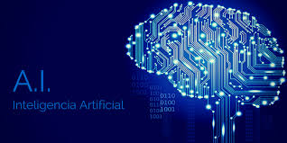
| futuro de la inteligencia artificial | peligos de la inteligencia artificial | desarrolladores de IA |
ARTICULO ACADEMICO INNOVACION DE LA TECNOLOGIA (IA)ESTE LINK TE REDIRIGE A PAGINA WEB QUE EXPLICA COMO LA TECNOLOGIA A ESTADO AVANZANDO PARA AYUDAR A MEJORAR LA INTELIGENCIA ARTIFICIAL
LA INFLUENCIA DE LA INTELIGENCIA ARTIFICIAL INFO EN LA SOCIEDAD Y COMO AFECTA NUESTRA VIDA COTIDIANAHABLA DE COMO LA INTELIGENCIA ARTIFICIAL INFLUYE EN LA SOCIEDAD Y COMO AFECTA EN NUESTRA VIDA COTIDIANA
Investigación sobre cómo la innovación en IA impulsa actividades empresariales y cambios tecnológicos globalesINVESTIGACION SOBRE COMO LA INNOVACIÓN EN LA (IA) IMPULSA ACTIVIDADES EMPRESARIALES Y CAMBIOS TECNOLOGICOS GLOBALES